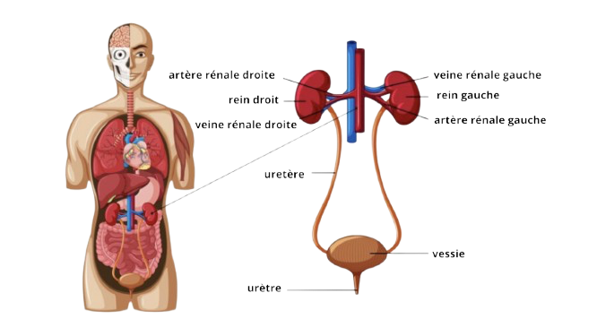
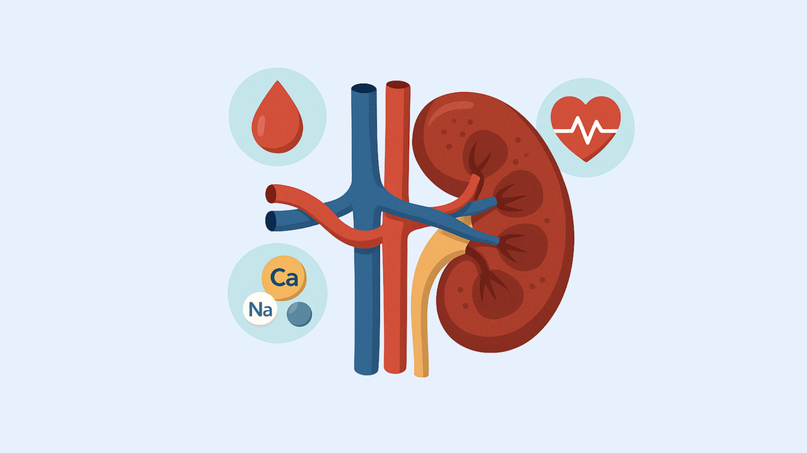

On les oublie souvent, mais nos reins travaillent chaque jour pour garder notre corps en bonne santé. À quoi ressemblent-ils ? Et que font-ils exactement ? On vous explique tout simplement !
- Nous avons généralement deux reins, situés dans notre abdomen, de chaque côté de la colonne vertébrale, en arrière des organes digestifs, dans ce qu’on appelle les fosses lombaires.
- Les reins ont une forme de gros haricots, mesurant environ 12 cm de long. Ils sont reliés à la vessie par deux canaux appelés uretères, qui transportent l’urine produite par les reins.
- Cette urine est ensuite stockée dans la vessie puis évacuée hors du corps par un canal appelé l’urètre.
Schéma du rein

Quand nous mangeons, buvons ou tout simplement quand notre corps fonctionne, il produit des déchets et des toxines. Ces substances s’accumulent dans le sang et doivent être éliminées pour éviter qu’elles ne deviennent toxiques.
C’est là qu’interviennent les reins : leur rôle principal est de filtrer le sang pour en retirer tous ces déchets.
Les reins forment alors l’urine, qui contient ces substances à éliminer. L’urine est envoyée dans la vessie par les uretères, avant d’être évacuée.
Le rein assure plusieurs fonctions essentielles au bon fonctionnement de l’organisme :
Il filtre le sang et élimine les déchets dans l’urine.

Il régule la composition du sang, notamment les sels minéraux, et participe au maintien de la pression artérielle.
Il active la vitamine D, indispensable à la santé des os.
Il produit une hormone (l’EPO) qui stimule la fabrication des globules rouges, nécessaires au transport de l’oxygène.
Le saviez-vous ? Même si nous avons deux reins, il est tout à fait possible de vivre normalement avec un seul. Le rein restant prend alors le relais et assure les fonctions essentielles à lui tout seul.
Le saviez-vous ? En 30 minutes, les reins filtrent l'intégralité du sang circulant dans le corps humain. Et cela 24h/24, 7/7jours.